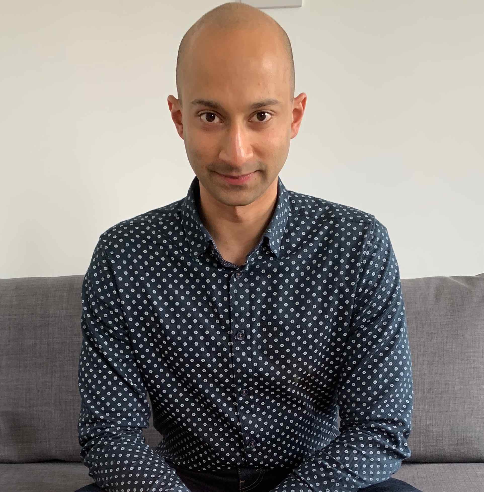
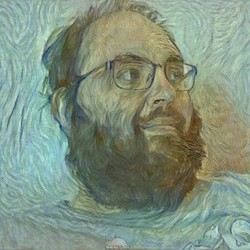
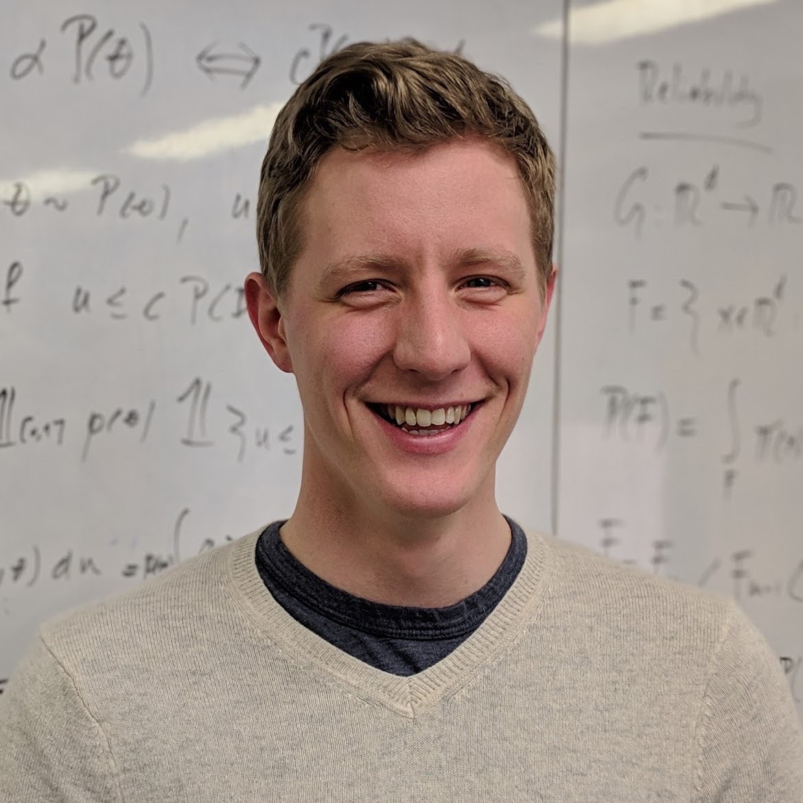
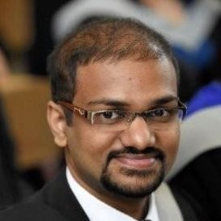

our team

dr pranay seshadri
founder & lead research scientist
Pranay has a background in engineering and has been working at the intersection of machine learning, statistics, and engineering for a decade. His love for polynomials started early on in life. When away from work you will find him in one of London’s many museums. Pranay has a PhD from Cambridge University in uncertainty quantification.

dr andrew duncan
advisor
Andrew has over 15 years' experience in research and product development of statistics and machine learning tools across the aerospace, maritime, energy and technology sectors. Andrew obtained his PhD in applied mathematics from the University of Warwick.

mr chun yui (nicholas) wong
research scientist
Nicholas works on all the fundamental algorithmic aspects of equadratures, ranging from coefficient computation to dimension reduction. He just submitted his PhD thesis at Cambridge! He is an active member of the universities Chinese Orchestra and Wireless societies.

dr ashley scillitoe
research scientist
Ashley leads the web development, testing, and continuous integration aspects of the equadratures. Outside work he enjoys cycling and swimming. He has a PhD from Cambridge University in high fidelity flow simulations in jet engines.
